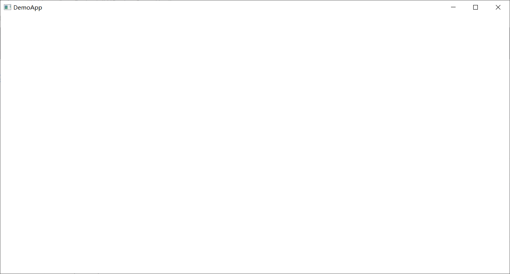
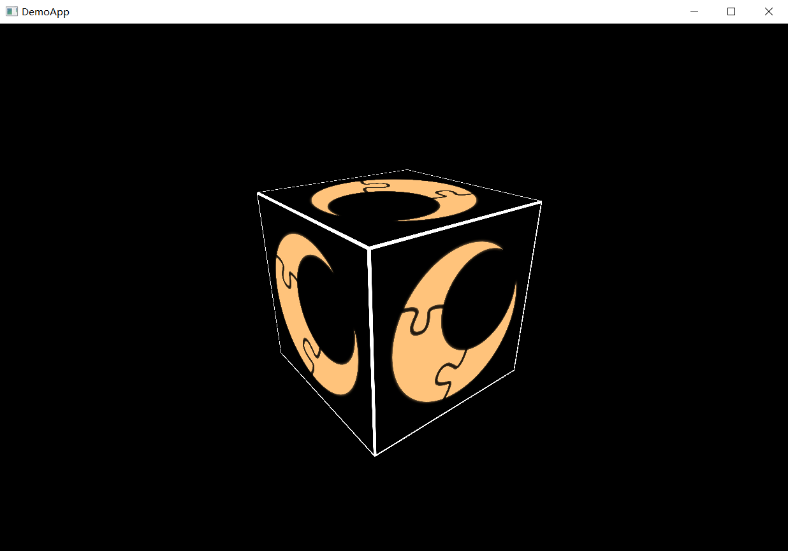

Getting Started
Welcome to Luna SDK. In this article, we will guide you to Luna SDK by creating a simple program that draws one textured 3D cube on the screen. At the end of this article, you will have a basic understanding of using Luna SDK to create a simple graphic program, and can start to explore more advanced features provided by Luna SDK. The source code of this article can be downloaded here:
Prerequisites
In this article, we assume that you have the basic knowledge of C++ programming and graphics programming (like using D3D11, D3D12 or OpenGL). You should also correctly setup Luna SDK and developing environments using the instructions provided in README.md of the project.
Creating the program
The first thing to do is to create an binary target for our demo program, so that XMake build system can correctly build our program. To create a new program, create a new folder in the {LUNA_ROOT_DIR}/Programs directory, and name it DemoApp. In this folder, create a new Lua script file called xmake.lua, and fill its content with the following text:
target("DemoApp")
set_luna_sdk_program()
add_files("**.cpp")
add_deps("Runtime", "Window", "RHI", "ShaderCompiler", "Image")
target_end()
target and target_end enclose a target scope, where all target definitions are specified. set_luna_sdk_program tells XMake that we are defining one Luna SDK program, this will let XMake set the target kind to "binary" and import all SDK options for the program. add_files("**.cpp") tells XMake to add all CPP files in the current directory and all subdirectories to the this target. add_deps lists all libraries that this program links to, in our example, we need to link to the SDK runtime (Runtime), the window module (Window) , the Graphics API module (RHI), the shader compiler module (ShaderCompiler) and the image file module (Image). If you got unresolved external symbol errors when compiling, make sure you already link correct libraries.
Then we need to create source CPP files for our program. Since out demo program is simple, we only create one "main.cpp" file to host all source codes. After this, the DemoApp directory should looks like this:
DemoApp
|- xmake.lua
|- main.cpp
The last thing is to add one line in the end of {LUNA_ROOT_DIR}/Programs/xmake.lua to tell XMake to add our program in the solution:
includes("DemoApp")
Well done, now every is set up and we can start to program our first Luna SDK program!
Program structure
Next, fills main.cpp with the following initial content. As we go further, we will add more properties and methods to our DemoApp structure, while remaining the rest part unchanged.
#include <Luna/Runtime/Runtime.hpp>
#include <Luna/Runtime/Module.hpp>
#include <Luna/Runtime/Debug.hpp>
#include <Luna/Runtime/UniquePtr.hpp>
using namespace Luna;
struct DemoApp
{
RV init();
RV update();
bool is_exiting();
};
RV DemoApp::init()
{
return ok;
}
RV DemoApp::update()
{
return ok;
}
bool DemoApp::is_closed()
{
return false;
}
RV run_app()
{
auto result = init_modules();
if(failed(result)) return result;
UniquePtr<DemoApp> app (memnew<DemoApp>());
result = app->init();
if(failed(result)) return result;
while(!app->is_exiting())
{
result = app->update();
if(failed(result)) return result;
}
return ok;
}
int main()
{
bool initialized = Luna::init();
if(!initialized) return -1;
RV result = run_app();
if(failed(result)) debug_printf(explain(result.errcode()));
Luna::close();
return 0;
}
The first four lines includes the header files that we need to include to compile the program, which are:
* Luna::init() and Luna::shutdown().
* Luna::init_modules().
* Luna::debug_printf().
* Luna::UniquePtr<T>.
You can include any SDK interface header files using similar syntax: #include <Luna/Module/File>. We set {LUNA_ROOT_DIR}/Engine as the global include directory, the user may check it for available header files. In this example, all header files are from the Runtime module, which is the core module of Luna SDK that provides fundamental SDK features.
The next statement is using namespace Luna. In Luna SDK, all types, functions and variables are defined in Luna namespace, and every module will define its elements in nested namespace, such as Luna::RHI. So, we use this statement to prevent spelling the Luna:: namespace prefix in our following code.
The program starts with the main function, just like any normal C/C++ program. In the main function, we firstly call Luna::init to initialize Luna SDK. This function should be called before any other Luna SDK function. Luna::init returns one Boolean value to indicate whether the SDK initialization is succeeded, if the return value is false, we then return -1 and exit the program to indicate one runtime error. If Luna::init returns true, then one Luna::close call is need before the program exit to let the SDK clean up all internal resources.
We then wrap the real program logic in one run_app function. The return type of run_app is RV, which is a shortcut for R<void>, this is part of the error handling mechanism of Luna SDK. R<T> is a structure that encapsulates one return value with type T and one error code with type ErrCode, which is simply an alias of usize (or std::size_t). If the function succeeds, the returned value will be one T-typed value and one error code 0; if the function fails, the returned value will be one non-zero error code, and the T-typed value will be uninitialized and inaccessible, you may call errcode() to fetch the error code from R<T>, and may call explain to get a brief description of the error. In our main function, we check whether our run_app function is failed by using failed helper function (there is also one succeeded helper function available), then we print the error description and exits the program if any error occurs.
In our run_app function, the first thing to do is calling init_modules, which will initialize all linked SDK modules for our program. We deliberately separate module initialization from Luna::init so that the user get a chance to set module initialization parameters before initializing modules, and modules can also indicate initialization failure by returning error codes (error handling system is available after Luna::init). Then, we allocate and initialize one new object of DemoApp type by calling memnew function. The following table shows memory allocation functions used in Luna SDK:
| Luna SDK functions | C++ functions/keywords |
|---|---|
memalloc(size, alignment) |
malloc(size) |
memfree(ptr, alignment) |
free(ptr) |
memrealloc(ptr, size, alignment) |
realloc(ptr, size) |
memsize(size, alignment) |
N/A |
memnew<T>(args...) |
new T (args...) |
memdelete(ptr) |
delete ptr |
The user should uses allocation functions provided by Luna SDK instead of those provided by C++ std. DemoApp will contain all states and logics for our demo program. The created DempApp instance will then be stored as a variable app with UniquePtr<DemoApp> type, which is a smart pointer that will delete the pointing object automatically when expired.
DemoApp has three functions: init, update and is_closed. The init function initializes the program, and reports errors if the initialization is failed; the update function updates the program state and renders the image at every frame; the is_exiting function checks whether the program is exiting. We will implement these three methods in the following sections.
The rest part of our run_app function simply checks whether the program is exiting by calling is_exiting, and updates the program when it is not exiting.
After filling this content, execute xmake build DemoApp on terminal or click build button on your IDE, you should successfully build the DemoApp program.
Window creation and event handling
Now that we have one basic program structure, we need to create a system window so that we can render images to it. We also need to implement window event handling so that the program can exit when the user clicks the close button of the window.
Window creation is fairly simple, we firstly need to introduce one new header:
#include <Luna/Window/Window.hpp>
then we add one new property to our DemoApp structure:
struct DemoApp
{
Ref<Window::IWindow> window;
RV init();
RV update();
bool is_exiting();
RV resize(u32 width, u32 height);
};
The window object is provided by Window::IWindow* interface pointer in Luna SDK, which points to a boxed object which manages its lifetime using reference counting. IWindow interface may have different implementations on different platforms, by they all provide the same functionality required by this interface. Ref<T> is a smart pointer for boxed objects, it will manage the reference counter of the pointing object automatically when being constructed and destructed, so the user does not need to call object_retain and object_release manually. You may compare Ref<T> to ComPtr used in Microsoft's Component-Object Model (COM), or the automatic reference counting in Apple's Objective-C and Swift. The default constructor of Ref<T> initializes the pointer to nullptr, so we need to assign it with a valid object.
Then we need to create our window in DemoApp::init:
RV DemoApp::init()
{
lutry
{
luset(window, Window::new_window("DemoApp", Window::WindowDisplaySettings::as_windowed(), Window::WindowCreationFlag::resizable));
}
lucatch
{
return lures;
}
return ok;
}
Besides the new_window function that creates the window, there are four new keywords in our code: lutry, lucatch, luset and lures. These four keywords are macros that enables us to write error handling using a simpler try-catch style, rather than fetching and checking error codes once and once again for every function call that may fail. lutry and lucatch must be used in pairs, next to each other. In the lutry block, the user may define multiple lulet , luset or luexp statements, lulet statement creates a new local variable to hold the return value of the function, and jumps to lucatch if the function fails; luset assigns the return value to one existing variable, and jumps to lucatch if the function fails; luexp is used if the function does not return any value, it simply checks whether the function succeeds, and jumps to lucatch if not. The user may also call luthrow manually in lutry block to jump to lucatch directly.
In the lucatch block, lures is provided as the error code that causes the failure. You may use one switch statement on the lures to handle specific errors, or you can propagate the error directly to parent function by return lures. Since error propagating is so commonly used, we create another macro lucatchret to replace lucatch { return lures; }, so the code above can be written as:
RV DemoApp::init()
{
lutry
{
luset(window, Window::new_window("DemoApp", Window::WindowDisplaySettings::as_windowed(), Window::WindowCreationFlag::resizable));
}
lucatchret;
return ok;
}
Since we use goto statement to implement lutry and lucatch, it you needs multiple lutry-lucatch pairs in one function, you should use a numbered version for every pair (like lutry2, lucatch2, luset2, lures2, etc.). In most cases, only one lutry-lucatch pair is sufficient.
Now let's get back to Window::new_window function that does the actual work:
R<Ref<IWindow>> new_window(const c8* title, const WindowDisplaySettings& display_settings, WindowCreationFlag flags)
In this function, title Specifies the title of the window, which is usually displayed on the title bar of the window. flags are a combination of WindowCreationFlag enumeration class that lists flags for window creation process, like whether the window is resizable by dragging the border of the window, whether the window is a border-less window, etc. display_settings specifies the display settings for the window, which is described by WindowDisplaySettings structre:
struct WindowDisplaySettings
{
monitor_t monitor;
i32 x;
i32 y;
u32 width;
u32 height;
u32 refresh_rate;
bool full_screen;
};
Every window can be displayed in windowed mode or full screen mode, which can be specified by full_screen. monitor specifies the monitor to attach the window to in full screen mode. If monitor is nullptr and the window is set to full screen mode, the primary monitor of the system will be used. x and y are the position of the window on screen coordinates in windowed mode. The user may pass DEFAULT_POS constant to indicate a system-specific default position for the window. width and height are used to control the size of the window, the user can pass 0 to indicate a system-specific default size. refresh_rate controls the refresh rate of the window, the user may pass 0 to use the default refresh rate of the system. WindowDisplaySettings comes with two static functions as_windowed and as_full_screen for quickly specify all parameters in one row, with default values specified when they are skipped by the user, just as in our example.
After the window is created, we need to register window event callbacks so that we can handle window events properly. In this example, the events we need to handle is the close event (triggered when the close button of the window is pressed) and the framebuffer resize event (triggered when the window framebuffer size is changed). This can be done by the following statements:
window->get_close_event().add_handler([](Window::IWindow* window) { window->close(); });
window->get_framebuffer_resize_event().add_handler([this](Window::IWindow* window, u32 width, u32 height) {
lupanic_if_failed(this->resize(width, height));
});
get_close_event and get_framebuffer_resize_event are methods of IWindow that gets the close event and the framebuffer resize event object of the window. The event object is a collection of callback functions that once triggered, calls all the callback functions. We then register one callback function to the close event that closes the window immediately, and one callback function to the framebuffer resize event that calls the resize method of our DempApp. The resize method is currently empty, we will fill the content of this method when we create render textures later:
RV DemoApp::resize(u32 width, u32 height)
{
return ok;
}
Window events are not polled automatically, we need to tell the window system to poll events at every frame by calling Window::poll_events in update function:
RV DemoApp::update()
{
Window::poll_events();
return ok;
}
This call polls events for all existing windows, so we don't need to provide specific window here. After we correctly handle the close event, we can complete the is_closed method of DemoApp:
bool DemoApp::is_exiting()
{
return window->is_closed();
}
So far, the complete code for main.cpp is:
#include <Luna/Runtime/Runtime.hpp>
#include <Luna/Runtime/Module.hpp>
#include <Luna/Runtime/Debug.hpp>
#include <Luna/Runtime/UniquePtr.hpp>
#include <Luna/Window/Window.hpp>
using namespace Luna;
struct DemoApp
{
Ref<Window::IWindow> window;
RV init();
RV update();
bool is_exiting();
RV resize(u32 width, u32 height);
};
RV DemoApp::init()
{
lutry
{
luset(window, Window::new_window("DemoApp", Window::WindowDisplaySettings::as_windowed(), Window::WindowCreationFlag::resizable));
window->get_close_event().add_handler([](Window::IWindow* window) { window->close(); });
window->get_framebuffer_resize_event().add_handler([this](Window::IWindow* window, u32 width, u32 height) {
lupanic_if_failed(this->resize(width, height));
});
}
lucatchret;
return ok;
}
RV DemoApp::update()
{
Window::poll_events();
return ok;
}
bool DemoApp::is_exiting()
{
return window->is_closed();
}
RV DemoApp::resize(u32 width, u32 height)
{
return ok;
}
RV run_app()
{
auto result = init_modules();
if(failed(result)) return result;
UniquePtr<DemoApp> app (memnew<DemoApp>());
result = app->init();
if(failed(result)) return result;
while(!app->is_exiting())
{
result = app->update();
if(failed(result)) return result;
}
return ok;
}
int main()
{
bool initialized = Luna::init();
if(!initialized) return -1;
RV result = run_app();
if(failed(result)) debug_printf(explain(result.errcode()));
Luna::close();
return 0;
}
Build and run DemoApp, and you will see a blank window appears, and the program exits when you click the close button of the window.

Fetching graphics device
After the window is created, we can start drawing our box. Luna SDK provides all rendering features through RHI module, which is the abbreviation of Rendering Hardware Interface. To use RHI module, we need to include its header first:
#include <Luna/RHI/RHI.hpp>
In Luna SDK, all graphics resources are related to one specific graphics device represented by RHI::IDevice, which is the virtual representation of the physical graphics device on the platform, so we need to add one property to DemoApp to hold this device:
Ref<RHI::IDevice> dev;
When RHI module initializes, it automatically chooses the most suitable physical device and creates one IDevice instance for you, which can be fetched by RHI::get_main_device(). You may also create additional devices for special use, but in our DemoApp, we will stick to the default one by adding the following line in the lutry scope of DemoApp::init:
dev = RHI::get_main_device();
We can also import all RHI types and functions by using namespace RHI; so that we don't need to spell them all over the init function:
using namespace RHI;
The code of DemoApp::init should look similar to:
RV DemoApp::init()
{
lutry
{
luset(window, Window::new_window("DemoApp", Window::WindowDisplaySettings::as_windowed(), Window::WindowCreationFlag::resizable));
window->get_close_event().add_handler([](Window::IWindow* window) { window->close(); });
window->get_framebuffer_resize_event().add_handler([this](Window::IWindow* window, u32 width, u32 height) {
lupanic_if_failed(this->resize(width, height));
});
dev = RHI::get_main_device();
using namespace RHI;
// New resource creation code goes here...
}
lucatchret;
return ok;
}
Unless explicitly specified, all codes we need to add to DemoApp::init in the following sections are added to the end of lutry scope, not in the end of the function scope directly.
Fetching command queue and creating command buffer
Luna SDK employs deferred execution model, where render and compute invocations are recorded as commands in command buffers, then submitted to GPU explicitly by submitting command buffers to command queues. The command buffer object manages memory allocated to store commands, it also tracks the execution state for commands in the buffer when the buffer is submitted for execution. The command queue is a FIFO message queue between the host program and GPU. The host program submits command buffers to the command queue, and GPU consumes command buffers from the queue and execute commands in the buffer. Command buffers in the same queue are guaranteed to execute one after another, the next command buffer will not be executed until the last command buffer is finished.
When IDevice initializes, it creates one or multiple command queues based on the physical device architecture and limitation. The user can use IDevice::get_num_command_queues to fetch the number of command queues present on the current device, and use IDevice::get_command_queue_desc to fetch the command queue description of each command queue. get_command_queue_desc returns one CommandQueueDesc structure, which is defined as follows:
struct CommandQueueDesc
{
CommandQueueType type;
CommandQueueFlag flags;
};
CommandQueueType indicates the type of the command queue. There are three different queue types: graphics, compute and copy. The copy queue only accepts copy commands, and is used for transferring data between different resources; the compute queue accepts copy and compute tasks, while the graphics queue accepts graphics, compute and copy commands. CommandQueueFlag indicates additional properties for the queue, including CommandQueueFlag::presenting, which indicates one command queue that supports swap chain presenting.
In our program, we need to choose one command queue of graphics type, and has CommandQueueFlag::presenting flag present. We firstly need to add one property to DemoApp to store the command queue index we choose:
u32 queue;
Then the command queue can be fetched by adding the following codes to DemoApp::init:
queue = U32_MAX;
u32 num_queues = dev->get_num_command_queues();
for (u32 i = 0; i < num_queues; ++i)
{
auto desc = dev->get_command_queue_desc(i);
if (desc.type == CommandQueueType::graphics && test_flags(desc.flags, CommandQueueFlag::presenting))
{
queue = i;
break;
}
}
if(queue == U32_MAX) return BasicError::not_supported();
After we fetched the command queue, we need to create one command buffer to record commands that will be submitted to that queue. We firstly need to add one new property to DemoApp to hold the command buffer:
Ref<RHI::ICommandBuffer> cmdbuf;
Then we can create the command buffer by adding the following codes to DemoApp::init:
luset(cmdbuf, dev->new_command_buffer(queue));
When we create the command buffer, we should pass the index of the command queue that is attached to the command buffer. The created command buffer can only be submitted to the command queue specified when creating the command buffer.
Creating swap chain
The swap chain object contains resources that are used to present render results to our window. In order to create one swap chain, we firstly need to add one property to DemoApp to store the created swap chain:
Ref<RHI::ISwapChain> swap_chain;
In Luna SDK, the swap chain presentation is also a command that should be submitted using command queues, so we need to specify the command queue we need to use when creating swap chains like so:
luset(swap_chain, dev->new_swap_chain(queue, window, SwapChainDesc(0, 0, 2, Format::bgra8_unorm, true)));
The swap chain is described by one SwapChainDesc structure:
struct SwapChainDesc
{
u32 width;
u32 height;
u32 buffer_count;
Format pixel_format;
bool vertically_synchronized;
};
When used for creating swap chains, you may pass 0 for width and height property, which indicates the system to use the window framebuffer size as the size of the swap chain.
The swap chain needs to be resized when the window framebuffer size is changed. This can be done by filling DemoApp::resize method with the following codes:
RV DemoApp::resize(u32 width, u32 height)
{
lutry
{
using namespace RHI;
if(width && height)
{
auto dev = get_main_device();
luexp(swap_chain->reset({width, height, 2, Format::unknown, true}));
}
}
lucatchret;
return ok;
}
ISwapChain::reset will reset the swap chain according to the new swap chain description, we can use Format::unknown to tell the system to use the current back buffer format for the new back buffer. Note that on some systems, the resize event will be emitted with both width and height being 0 if the window is minimized. We cannot create one swap chain with zero width or height, so we should handle this case and resize the back buffer with only non-zero size values.
Creating descriptor set layout and descriptor set
The descriptor set object stores descriptors that bind resources to graphics or compute pipeline. Descriptors have the following types:
- Uniform buffer view, which binds constant global data to shaders.
- Read buffer view, which binds buffers to shaders and enables load operations on the buffer data.
- Read texture view, which binds textures to shaders and enables sampling and load operations on the pixel data.
- Read write buffer view, which binds buffers to shaders and enables load, store and atomic operations on the buffer data.
- Read write texture view, which binds textures to shaders and enables load, store, and atomic operations on the pixel data.
- Sampler, which stores sampling settings and exposes those settings for shaders.
Every pipeline may bind multiple descriptor sets, every descriptor set may contain all kinds of descriptors listed above. The descriptor set layout object stores the layout of one descriptor set object, including the number of descriptors in the descriptor set and the property of each descriptor.
In order to create one descriptor set layout object, we need to fill one DescriptorSetLayoutDesc structure. Here is the definition of DescriptorSetLayoutDesc structure:
struct DescriptorSetLayoutDesc
{
Span<const DescriptorSetLayoutBinding> bindings;
DescriptorSetLayoutFlag flags = DescriptorSetLayoutFlag::none;
};
The descriptor set layout consists of multiple bindings specified by DescriptorSetLayoutBinding, each binding describes one range of the descriptor set:
struct DescriptorSetLayoutBinding
{
DescriptorType type;
u32 binding_slot;
u32 num_descs;
ShaderVisibilityFlag shader_visibility_flags;
};
the type property describes the type of this binding. All descriptors in the same binding must be the same type:
enum class DescriptorType : u32
{
uniform_buffer_view,
read_buffer_view,
read_write_buffer_view,
read_texture_view,
read_write_texture_view,
sampler
};
binding_slot and num_descs describes the binding slot range of this binding, starting from 0. All slots in [binding_slot, binding_slot + num_descs) will be occupied by this binding and cannot be used by other bindings. If num_descs is greater than 1, then this binding will be interpreted as one descriptor array in the shader. shader_visibility_flags specifies which shaders may access descriptors in this binding, you may restrict the visibility of one binding to one set of specific shaders, which may improve performance on some platforms.
We need to add two new properties to DemoApp to hold the descriptor set layout object and the descriptor set object:
Ref<RHI::IDescriptorSetLayout> dlayout;
Ref<RHI::IDescriptorSet> desc_set;
We need 1 descriptor set with 1 constant buffer view, 1 shader resource view and 1 sampler. So we can create our descriptor set layout object in DemoApp::init like so:
luset(dlayout, dev->new_descriptor_set_layout(DescriptorSetLayoutDesc({
{DescriptorType::uniform_buffer_view, 0, 1, ShaderVisibilityFlag::vertex},
{DescriptorType::read_texture_view, 1, 1, ShaderVisibilityFlag::pixel},
{DescriptorType::sampler, 2, 1, ShaderVisibilityFlag::pixel}
})));
Then we can create one descriptor set using the descriptor set layout object:
luset(desc_set, dev->new_descriptor_set(DescriptorSetDesc(dlayout)));
We will fill descriptors in the set by calling update_descriptors later.
Compiling shaders
The next thing to do is compiling shaders for the pipeline state object. Luna SDK uses HLSL as the source shader language, and uses ShaderCompiler module to compile HLSL to DXBC, DXIL, SPIR-V and other target shading languages. To compile shader, we need to include corresponding header files:
#include <Luna/ShaderCompiler/ShaderCompiler.hpp>
#include <Luna/RHI/ShaderCompileHelper.hpp>
ShaderCompileHelper.hpp includes RHI::get_current_platform_shader_target_format() function, which tell the shader compiler the native target target shader format for the current graphics API. Since our shader is rather simple, we declare our shader source code directly in the C++ source file, in DemoApp::init function:
const char vs_shader_code[] = R"(
cbuffer vertexBuffer : register(b0)
{
float4x4 world_to_proj;
};
struct VS_INPUT
{
[[vk::location(0)]]
float3 position : POSITION;
[[vk::location(1)]]
float2 texcoord : TEXCOORD;
};
struct PS_INPUT
{
[[vk::location(0)]]
float4 position : SV_POSITION;
[[vk::location(1)]]
float2 texcoord : TEXCOORD;
};
PS_INPUT main(VS_INPUT input)
{
PS_INPUT output;
output.position = mul(world_to_proj, float4(input.position, 1.0f));
output.texcoord = input.texcoord;
return output;
})";
const char ps_shader_code[] = R"(
Texture2D tex : register(t1);
SamplerState tex_sampler : register(s2);
struct PS_INPUT
{
[[vk::location(0)]]
float4 position : SV_POSITION;
[[vk::location(1)]]
float2 texcoord : TEXCOORD;
};
[[vk::location(0)]]
float4 main(PS_INPUT input) : SV_Target
{
return float4(tex.Sample(tex_sampler, input.texcoord));
})";
here we use C++ raw string syntax R"()" to declare multiline string without appending \ for every string line. Note the register number specified in shader must match the binding slot specified in descriptor set layout we just created. Since we use the same slot numbering system for all descriptor types, the register number for b, t, u and s should not overlap.
Then we can compile shaders using ShaderCompiler::ICompiler object:
auto compiler = ShaderCompiler::new_compiler();
compiler->set_source({ vs_shader_code, strlen(vs_shader_code) });
compiler->set_source_name("DemoAppVS");
compiler->set_entry_point("main");
compiler->set_target_format(RHI::get_current_platform_shader_target_format());
compiler->set_shader_type(ShaderCompiler::ShaderType::vertex);
compiler->set_shader_model(6, 0);
compiler->set_optimization_level(ShaderCompiler::OptimizationLevel::full);
luexp(compiler->compile());
auto vs_data = compiler->get_output();
Blob vs(vs_data.data(), vs_data.size());
compiler->reset();
compiler->set_source({ ps_shader_code, strlen(ps_shader_code) });
compiler->set_source_name("DemoAppPS");
compiler->set_entry_point("main");
compiler->set_target_format(RHI::get_current_platform_shader_target_format());
compiler->set_shader_type(ShaderCompiler::ShaderType::pixel);
compiler->set_shader_model(6, 0);
compiler->set_optimization_level(ShaderCompiler::OptimizationLevel::full);
luexp(compiler->compile());
auto ps_data = compiler->get_output();
Blob ps(ps_data.data(), ps_data.size());
The shader compilation process is fairly simple, we just set source code, compilation settings, then triggers the compilation. The compilation result will be given by get_output, we use one Blob object , a container for binary data, to hold the compilation result. The compiled shader data will be used when creating pipeline state object later.
Creating pipeline layout and pipeline state
The graphics and compute pipeline state is described by two objects: pipeline layout object and pipeline state object. Pipeline layout object stores the shader binding layout information for all shader stages, while pipeline state object stores pipeline settings for all graphics stages.
Pipeline layout is described by the PipelineLayoutDesc structure, which is configured by specifying layouts of descriptor sets that will be bound to this pipeline and flags that specifies shaders that are allowed to access shader inputs.
struct PipelineLayoutDesc
{
Span<IDescriptorSetLayout*> descriptor_set_layouts;
PipelineLayoutFlag flags;
};
We need to add one new property to DemoApp to hold the pipeline layout object:
Ref<RHI::IPipelineLayout> playout;
Then we can create pipeline layout object using the following code:
luset(playout, dev->new_pipeline_layout(PipelineLayoutDesc({dlayout},
PipelineLayoutFlag::allow_input_assembler_input_layout)));
The pipeline object is described by the GraphicsPipelineStateDesc structure or the ComputePipelineStateDesc structure. Since we are creating one graphics pipeline, we need to fill the GraphicsPipelineStateDesc structure, which is a complex structure that contains all pipeline settings for one graphics pipeline:
struct GraphicsPipelineStateDesc
{
InputLayoutDesc input_layout;
IPipelineLayout* pipeline_layout = nullptr;
Span<const byte_t> vs;
Span<const byte_t> ps;
RasterizerDesc rasterizer_state;
DepthStencilDesc depth_stencil_state;
BlendDesc blend_state;
IndexBufferStripCutValue ib_strip_cut_value = IndexBufferStripCutValue::disabled;
PrimitiveTopology primitive_topology = PrimitiveTopology::triangle_list;
u8 num_color_attachments = 0;
Format color_formats[8] = { Format::unknown };
Format depth_stencil_format = Format::unknown;
u32 sample_count = 1;
u32 sample_mask = 0xFFFFFFFF;
};
Most graphic settings are similar to those in D3D11, D3D12, OpenGL or Vulkan, we will not explain these settings, but only gives the code that correctly sets every setting of the pipeline. You can see docs for RHI module for detailed explanations of these settings.
We need to add one new property to DemoApp to hold the pipeline state object:
Ref<RHI::IPipelineState> pso;
Then we can create pipeline state object using the following code:
GraphicsPipelineStateDesc ps_desc;
ps_desc.primitive_topology = PrimitiveTopology::triangle_list;
ps_desc.sample_mask = U32_MAX;
ps_desc.rasterizer_state = RasterizerDesc();
ps_desc.depth_stencil_state = DepthStencilDesc(true, true, CompareFunction::less_equal);
ps_desc.ib_strip_cut_value = IndexBufferStripCutValue::disabled;
InputAttributeDesc input_attributes[] = {
InputAttributeDesc("POSITION", 0, 0, 0, 0, Format::rgb32_float),
InputAttributeDesc("TEXCOORD", 0, 1, 0, 12, Format::rg32_float)
};
InputBindingDesc input_bindings[] = {
InputBindingDesc(0, 20, InputRate::per_vertex)
};
ps_desc.input_layout.attributes = {input_attributes, 2};
ps_desc.input_layout.bindings = {input_bindings, 1};
ps_desc.vs = vs.cspan();
ps_desc.ps = ps.cspan();
ps_desc.pipeline_layout = playout;
ps_desc.num_color_attachments = 1;
ps_desc.color_formats[0] = Format::rgba8_unorm;
ps_desc.depth_stencil_format = Format::d32_float;
luset(pso, dev->new_graphics_pipeline_state(ps_desc));
Creating depth textures
The next step is to create one depth texture that is used as the depth stencil attachment when drawing our box. Texture objects in Luna SDK are represented by ITexture interface, and are described by TextureDesc structure, which is defined as follows:
struct TextureDesc
{
TextureType type;
Format format;
u32 width;
u32 height;
u32 depth;
u32 array_size;
u32 mip_levels;
u32 sample_count;
TextureUsageFlag usages;
ResourceFlag flags;
}
type specifies the type of the texture, like tex1d, tex2d, etc. format specifies the pixel format of the texture. usages specifies all possible usages of the texture when being bound to a pipeline. width, height and depth specifies the size of the texture. array_size specifies the number of texture elements if this texture object represents a texture array, otherwise 1 shall be specified. mip_levels specifies the number of mips that should be allocated for the resource, if this is 0, the system allocates full mipmap chain for the resource. sample_count specifies the sampling count for MSAA textures. flags specifies additional features for the texture, like whether this texture can share memory with other resources.
To simplify the texture description, we can use static methods provided by TextureDesc to quickly construct TextureDesc structure:
TextureDesc TextureDesc::tex1d(Format format, TextureUsageFlag usages, u64 width, u32 array_size = 1, u32 mip_levels = 0, ResourceFlag flags = ResourceFlag::none);
TextureDesc TextureDesc::tex2d(Format format, TextureUsageFlag usages, u64 width, u32 height, u32 array_size = 1, u32 mip_levels = 0, u32 sample_count = 1, ResourceFlag flags = ResourceFlag::none);
TextureDesc TextureDesc::tex3d(Format format, TextureUsageFlag usages, u64 width, u32 height, u32 depth, u32 mip_levels = 0, ResourceFlag flags = ResourceFlag::none);
Back to our DemoApp, we need to add one new property to DemoApp to hold the depth texture:
Ref<RHI::ITexture> depth_tex;
Then we can create textures using the following code:
auto window_size = window->get_framebuffer_size();
luset(depth_tex, dev->new_texture(MemoryType::local, TextureDesc::tex2d(Format::d32_float, TextureUsageFlag::depth_stencil_attachment, window_size.x, window_size.y, 1, 1)));
The first parameter of new_texture is the memory type of texture memory. The memory type is defined by MemoryType enumeration, possible options include:
local- The memory can only be accessed by GPU, CPU access is disabled. This memory type is suitable for resources that will be frequently accessed by GPU.upload- The memory can be written by CPU and read by GPU. This memory type is suitable for resources that should be updated by CPU frequently. Textures cannot be created in this heap.readback- The memory can be written by GPU and read by CPU. This memory type is suitable for transferring data from GPU to CPU. Textures cannot be created in this heap.
Note that when retrieving window size for rendering, we need to call IWindow::get_framebuffer_size instead of IWindow::get_size, on some platforms the window size is not necessary measured in pixels, causing these two methods return different values.
Since we are using the window size as the depth texture size, the depth texture should also be recreated when the window size is changed. This can be done by adding the following code to the DemoApp::resize method:
luset(depth_tex, dev->new_texture(MemoryType::local, TextureDesc::tex2d(Format::d32_float, TextureUsageFlag::depth_stencil_attachment, width, height, 1, 1)));
Creating buffers and uploading buffer data
The next step is to create buffers used in our DemoApp, including:
- The vertex buffer and index buffer for our box mesh.
- The uniform buffer for camera properties.
Firstly we need to define the vertex structure of our box. Adding the following code after the declaration of DemoApp structure:
struct Vertex
{
Float3U position;
Float2U texcoord;
};
Float2U and Float3U are vector types used in Luna SDK, which represent 2D and 3D vectors. In Luna SDK, we have 16-bytes aligned vector types Float2, Float3, Float4, and unaligned vector types Float2U, Float3U and Float4U. The aligned vector types are used for calculations, SIMD functions like min, max, lerp, clamp only accepts aligned types, while unaligned vector types are used for storing and transferring data, just like this case. The size of aligned vector types are all 16 bytes, while the size of unaligned types are 8, 12 and 16 for Float2U, Float3U and Float4U.
We need to add three new properties to DemoApp to hold the these three buffers:
Ref<RHI::IBuffer> vb;
Ref<RHI::IBuffer> ib;
Ref<RHI::IBuffer> ub;
As you can see, buffer objects are represented by IBuffer interface. Both IBuffer and ITexture interface inherits from IResource interface, which provides one method to fetch the underlying memory of the resource. Fetching the underlying memory enables the user to create aliasing resources that share the same memory, which is an advanced feature that will not be covered in this article.
One buffer resource is described by BufferDesc structure, which is defined as follows:
struct BufferDesc
{
u64 size;
BufferUsageFlag usages;
ResourceFlag flags;
}
BufferDesc is rather simple compared to TextureDesc. size specifies the size of the buffer, usages specifies all possible usages of the buffer when being bound to the pipeline, and flags specifies additional features of the buffer, like whether this buffer can share memory with other resources. Then, we need to create the vertex buffer and index buffer for our box using the following code:
Vertex vertices[] = {
{{+0.5, -0.5, -0.5}, {0.0, 1.0}}, {{+0.5, +0.5, -0.5}, {0.0, 0.0}},
{{+0.5, +0.5, +0.5}, {1.0, 0.0}}, {{+0.5, -0.5, +0.5}, {1.0, 1.0}},
{{+0.5, -0.5, +0.5}, {0.0, 1.0}}, {{+0.5, +0.5, +0.5}, {0.0, 0.0}},
{{-0.5, +0.5, +0.5}, {1.0, 0.0}}, {{-0.5, -0.5, +0.5}, {1.0, 1.0}},
{{-0.5, -0.5, +0.5}, {0.0, 1.0}}, {{-0.5, +0.5, +0.5}, {0.0, 0.0}},
{{-0.5, +0.5, -0.5}, {1.0, 0.0}}, {{-0.5, -0.5, -0.5}, {1.0, 1.0}},
{{-0.5, -0.5, -0.5}, {0.0, 1.0}}, {{-0.5, +0.5, -0.5}, {0.0, 0.0}},
{{+0.5, +0.5, -0.5}, {1.0, 0.0}}, {{+0.5, -0.5, -0.5}, {1.0, 1.0}},
{{-0.5, +0.5, -0.5}, {0.0, 1.0}}, {{-0.5, +0.5, +0.5}, {0.0, 0.0}},
{{+0.5, +0.5, +0.5}, {1.0, 0.0}}, {{+0.5, +0.5, -0.5}, {1.0, 1.0}},
{{+0.5, -0.5, -0.5}, {0.0, 1.0}}, {{+0.5, -0.5, +0.5}, {0.0, 0.0}},
{{-0.5, -0.5, +0.5}, {1.0, 0.0}}, {{-0.5, -0.5, -0.5}, {1.0, 1.0}}
};
u32 indices[] = {
0, 1, 2, 0, 2, 3,
4, 5, 6, 4, 6, 7,
8, 9, 10, 8, 10, 11,
12, 13, 14, 12, 14, 15,
16, 17, 18, 16, 18, 19,
20, 21, 22, 20, 22, 23
};
luset(vb, dev->new_buffer(MemoryType::local, BufferDesc(BufferUsageFlag::vertex_buffer | BufferUsageFlag::copy_dest, sizeof(vertices))));
luset(ib, dev->new_buffer(MemoryType::local, BufferDesc(BufferUsageFlag::index_buffer | BufferUsageFlag::copy_dest, sizeof(indices))));
We firstly define vertex and index data for our box, then we create two buffer resources to hold the vertex and index data. One buffer is created by calling IDevice::new_buffer, which is similar to IDevice::new_texture, but takes BufferDesc as the resource descriptor object. Since we only need to upload vertex and index buffer data once, these two buffers are created in local memory to achieve maximum GPU bandwidth.
We can use similar code to create the constant buffer for uploading camera properties, but there are two differences. First, the graphic device has alignment requirements for constant buffers, which can be fetched from IDevice::get_uniform_buffer_data_alignment(), so we use align_upper helper function to adjust the size of our uniform buffer resource to meet the alignment requirement. Second, since we need to update uniform buffer data once every frame, we should choose upload memory type instead of local to give host program direct access to that resource.
In our DemoApp, the data of the uniform buffer is the 4x4 world-to-project matrix of the camera. We need to add a new include file to use matrix types:
#include <Luna/Runtime/Math/Matrix.hpp>
then we can use the following code to create constant buffer:
auto ub_align = dev->get_uniform_buffer_data_alignment();
luset(ub, dev->new_buffer(MemoryType::upload, BufferDesc(BufferUsageFlag::uniform_buffer, align_upper(sizeof(Float4x4), ub_align))));
as you can see, Float4x4 is the matrix type used in Luna SDK. We also have Float3x3 for 2D affine transformations.
Uploading vertex and index data
Now that we have created one vertex buffer and one index buffer, we need to upload vertex and index data to these buffers, so that they can be used by GPU correctly. As we have mentioned before, resources with local memory type can not be accessed by the host directly. To copy data between local memory and host memory, we can either use staging buffers to transfer the data manually, or we can use RHI::copy_resource_data to perform data copy automatically. We will show how to perform data copy in both approaches.
Uploading data manually
In order to upload data to resources with local memory type, we need to create intermediate buffers with upload memory type, copy data to such buffers form the host, and use GPU to copy data from such buffers to resources with local memory type. Such intermediate buffers are usually called staging buffers, and are used frequently to copy data from host memory to device local memory. The following code shows how to upload data for our vertex and index buffer:
lulet(vb_staging, dev->new_buffer(MemoryType::upload, BufferDesc(BufferUsageFlag::copy_source, sizeof(vertices))));
lulet(ib_staging, dev->new_buffer(MemoryType::upload, BufferDesc(BufferUsageFlag::copy_source, sizeof(indices))));
void* vb_mapped = nullptr;
luexp(vb_staging->map(0, 0, &vb_mapped));
memcpy(vb_mapped, vertices, sizeof(vertices));
vb_staging->unmap(0, sizeof(vertices));
void* ib_mapped = nullptr;
luexp(ib_staging->map(0, 0, &ib_mapped));
memcpy(ib_mapped, indices, sizeof(indices));
ib_staging->unmap(0, sizeof(indices));
cmdbuf->begin_copy_pass();
cmdbuf->resource_barrier({
BufferBarrier(vb, BufferStateFlag::automatic, BufferStateFlag::copy_dest),
BufferBarrier(vb_staging, BufferStateFlag::automatic, BufferStateFlag::copy_source),
BufferBarrier(ib, BufferStateFlag::automatic, BufferStateFlag::copy_dest),
BufferBarrier(ib_staging, BufferStateFlag::automatic, BufferStateFlag::copy_source),
}, {});
cmdbuf->copy_buffer(vb, 0, vb_staging, 0, sizeof(vertices));
cmdbuf->copy_buffer(ib, 0, ib_staging, 0, sizeof(indices));
cmdbuf->end_copy_pass();
cmdbuf->submit({}, {}, true);
cmdbuf->wait();
cmdbuf->reset();
Firstly, we create two staging buffers vb_staging and ib_staging. These two buffers have the same size as vb and ib and use upload memory type, so they can be written by the host directly. Then, we use IBuffer::map to take pointers to the buffer memory, use memcpy to copy data to the memory, then use IBuffer::unmap to release the host access to the memory. map takes two integer parameters indicating the host reading range of the mapped memory, this should always be 0 if the memory type of the buffer is not readback, just like this case. unmap takes another two integer parameters indicating the host writing range of the mapped memory. in our case, we have written memory in [0, sizeof(data)) range, so we should specify the range correctly. There is a special range [0, USIZE_MAX) that indicates the whole buffer memory is read or written, so we don't need to specify the size explicitly.
After we copy data to staging buffers, we need to tell GPU to copy data from staging buffers to GPU local resources. As we have mentioned before, to send commands to GPU, we need to record commands into command buffers, submit them to command queues, then waits for command buffers to be finished by GPU.
The first command we need to record is ICommandBuffer::begin_copy_pass, which tells GPU to start a copy pass. This is required because all copy commands like copy_buffer, copy_texture etc. can only be recorded in a copy pass scope. Similarly, we have render passes for render commands, and compute passes for compute commands. After beginning the copy pass, we need to emit resource barriers to transfer resources used by GPU to compatible states. Resource barrier commands are recorded by ICommandBuffer::resource_barrier, and will be described later. After resources have been transferred into suitable states, we call ICommandBuffer::copy_buffer to record one buffer-to-buffer copy command. Finally, we call ICommandBuffer::end_copy_pass to end the copy pass we opened before.
When we finish recording commands into the command buffer, we call ICommandBuffer::submit to submit the command buffer to the command queue, call ICommandBuffer::wait to wait for the command buffer to be finished, then call ICommandBuffer::reset to clear commands in the command buffer, and reset the command buffer state so that it can be used for a recording new commands.
Uploading data using RHI::copy_resource_data
In order to use RHI::copy_resource_data, we need to include one new header file:
#include <Luna/RHI/Utility.hpp>
RHI/Utility.hpp is an auxiliary library that defines high-level functionalities implemented using APIs provided by RHI, including RHI::copy_resource_data we use here. The following code shows how to upload data using RHI::copy_resource_data:
luexp(copy_resource_data(cmdbuf, {
CopyResourceData::write_buffer(vb, 0, vertices, sizeof(vertices)),
CopyResourceData::write_buffer(ib, 0, indices, sizeof(indices))
}));
You can see how RHI::copy_resource_data greatly simplifies the code we need to write in order to upload resource data.
Loading image from file
The next step is to load our Luna LOGO image that will be drawn on the box surface:
Save the image file in the same directory as main.cpp, and naming it luna.png. You should have one file structure similar to this:
DemoApp
|- xmake.lua
|- main.cpp
|- luna.png
Then fills xmake.lua with the following code:
target("DemoApp")
set_luna_sdk_program()
add_files("**.cpp")
add_deps("Runtime", "Window", "RHI", "ShaderCompiler", "Image")
before_build(function(target)
os.cp("$(scriptdir)/luna.png", target:targetdir() .. "/luna.png")
end)
after_install(function (target)
os.cp(target:targetdir() .. "/luna.png", target:installdir() .. "/bin/luna.png")
end)
target_end()
This script triggers registers custom functions before building the program and after installing the program, the custom function copies the image file to same the directory of our program binary file, so that our program can correctly find the image file.
Then, go back to main.cpp, and add one new property to DemoApp to represent the loaded image:
Ref<RHI::ITexture> file_tex;
To load the image in our program, we need to use one new module called Image, which parses image file data and gives row-majored image data in our desired format. We also need to use the file API provided by Runtime module, so we includes two new headers:
#include <Luna/Runtime/File.hpp>
#include <Luna/Image/Image.hpp>
The first thing to do is to load image file data from our luna.png file. In order to load file data, we need to use the open_file function provided by the Runtime module. This function returns one file handle represented by IFile if the file is correctly opened. Then, we loads the file data into one Blob object by calling load_file_data, this function creates one properly-sized blob object, and calls IFile::read to read all data of the file to the blob, then returns the blob:
lulet(image_file, open_file("Luna.png", FileOpenFlag::read, FileCreationMode::open_existing));
lulet(image_file_data, load_file_data(image_file));
Now that the file data has been stored in image_file_data, we need to call Image::read_image_file function to parse the file data and gives the real image data:
Image::ImageDesc image_desc;
lulet(image_data, Image::read_image_file(image_file_data.data(), image_file_data.size(), Image::ImagePixelFormat::rgba8_unorm, image_desc));
Image::read_image_file function outputs one Image::ImageDesc structure that describes the returned image data, including the width, height and pixel format of the image. The image data is arranged in a row-major manner and without and alignment padding. We can now creates the texture resource based on the image size:
luset(file_tex, dev->new_texture(MemoryType::local, TextureDesc::tex2d(Format::rgba8_unorm,
TextureUsageFlag::copy_dest | TextureUsageFlag::read_texture, image_desc.width, image_desc.height, 1, 1)));
The following code shows how to upload data for our texture:
u64 tex_size, tex_row_pitch, tex_slice_pitch;
dev->get_texture_data_placement_info(image_desc.width, image_desc.height, 1, Format::rgba8_unorm, &tex_size, nullptr, &tex_row_pitch, &tex_slice_pitch);
lulet(file_tex_staging, dev->new_buffer(MemoryType::upload, BufferDesc(BufferUsageFlag::copy_source, tex_size)));
void* file_tex_mapped = nullptr;
luexp(file_tex_staging->map(0, 0, &file_tex_mapped));
memcpy_bitmap(file_tex_mapped, image_data.data(), image_desc.width * 4, image_desc.height, tex_row_pitch, image_desc.width * 4);
file_tex_staging->unmap(0, USIZE_MAX);
cmdbuf->begin_copy_pass();
cmdbuf->resource_barrier({
BufferBarrier(file_tex_staging, BufferStateFlag::automatic, BufferStateFlag::copy_source)
}, {
TextureBarrier(file_tex, TEXTURE_BARRIER_ALL_SUBRESOURCES, TextureStateFlag::automatic, TextureStateFlag::copy_dest)
});
cmdbuf->copy_buffer_to_texture(file_tex, SubresourceIndex(0, 0), 0, 0, 0, file_tex_staging, 0, tex_row_pitch, tex_slice_pitch, image_desc.width, image_desc.height, 1);
cmdbuf->end_copy_pass();
cmdbuf->submit({}, {}, true);
cmdbuf->wait();
cmdbuf->reset();
Uploading texture data is similar to uploading buffer data, we need to create one staging buffer to hold the texture data, then use ICommandBuffer::copy_buffer_to_texture to copy data from buffer to texture. Note that most systems have special alignment requirements for texture data in buffers when copying data between buffers and textures, the user should call IDevice::get_texture_data_placement_info to fetch the texture data placement information for one specific texture, and use that information to manipulate texture data in the buffer. Instead of memcpy , the user should call memcpy_bitmap to copy row-major bitmap data, which takes src_row_pitch and dst_row_pitch to correctly offsets every texture data row.
We can also use RHI::copy_resource_data to upload data for textures like so:
luexp(copy_resource_data(cmdbuf, {
CopyResourceData::write_texture(file_tex, SubresourceIndex(0, 0), 0, 0, 0,
image_data.data(), image_desc.width * 4, image_desc.width * image_desc.height * 4, image_desc.width, image_desc.height, 1)
}));
Set up descriptor set
Once the uniform buffer and file texture is set up, we can bind these two resources to the descriptor set by calling IDescriptorSet::update_descriptors. We also need to set the sampler in the descriptor set to be used by the pixel shader.
luexp(desc_set->update_descriptors({
WriteDescriptorSet::uniform_buffer_view(0, BufferViewDesc::uniform_buffer(ub)),
WriteDescriptorSet::read_texture_view(1, TextureViewDesc::tex2d(file_tex)),
WriteDescriptorSet::sampler(2, SamplerDesc(Filter::linear, Filter::linear, Filter::linear, TextureAddressMode::clamp, TextureAddressMode::clamp, TextureAddressMode::clamp))
}));
This concludes the DemoApp::init function.
Camera control
Now that we have created all resources required to draw the box, we need to fill the actual drawing code in DemoApp::update. To make our program more interesting, we can apply one simple animation that rotates the camera around the box. We firstly adds one new property to DemoApp that stores the rotation angle of the camera:
f32 camera_rotation = 0.0f;
We can increase the rotation angle of the camera by one at every frame by adding the following line to the end of DemoApp:update:
camera_rotation += 1.0f;
Since we are going to use many functions that may throw errors, it is better to declare one lutry-lucatch scope that wraps all succeeding codes in DemoApp:update. Also, we don't want to render the image if the window is closed or minimized, so we add two early-out conditions after Window::poll_events(). Now DemoApp::update should look like this:
RV DemoApp::update()
{
Window::poll_events();
if(window->is_closed()) return ok;
if(window->is_minimized()) return ok;
lutry
{
camera_rotation += 1.0f;
// More codes goes here...
}
lucatchret;
return ok;
}
After we updates the camera rotation, we need to calculate the view-projection matrix for the camera. Fortunately, the math library of the Runtime module already includes implementations for many commonly used vector and matrix calculations, and here we are going to use two of them: AffineMatrix::make_look_at and ProjectionMatrix::make_perspective_fov. To use these two functions, we firstly need to add one new header file:
#include <Luna/Runtime/Math/Transform.hpp>
Then the matrix can be computed using the following code:
Float3 camera_pos(cosf(camera_rotation / 180.0f * PI) * 3.0f, 1.0f, sinf(camera_rotation / 180.0f * PI) * 3.0f);
Float4x4 camera_mat = AffineMatrix::make_look_at(camera_pos, Float3(0, 0, 0), Float3(0, 1, 0));
auto window_sz = window->get_framebuffer_size();
camera_mat = mul(camera_mat, ProjectionMatrix::make_perspective_fov(PI / 3.0f, (f32)window_sz.x / (f32)window_sz.y, 0.001f, 100.0f));
AffineMatrix::make_look_at generates one camera view matrix from the position of the camera and the position of the point to look at. ProjectionMatrix::make_perspective_fov is another helper function that generates one projection matrix from the specified field-of-view and aspect ratio values. Those two matrices are multiplied by mul function to get the final view-projection matrix. Note that when performing matrix multiplications, use mul instead of operator *, the later one is used to multiply each element in the matrix separately.
After we get the matrix, we need to copy the matrix data to the uniform buffer resource like so:
void* camera_mapped;
luexp(ub->map(0, 0, &camera_mapped));
memcpy(camera_mapped, &camera_mat, sizeof(Float4x4));
ub->unmap(0, sizeof(Float4x4));
Fetching the back buffer
In order to render contents to one window, we need to fetch back buffers managed by the window swap chain. The number of back buffers that are contained by a swap chain is determined by SwapChainDesc::buffer_count, which can be set when the swap chain is created or reset. At every frame, only one back buffer can be used for rendering, which can be fetched by calling ISwapChain::get_current_back_buffer:
lulet(back_buffer, swap_chain->get_current_back_buffer());
ISwapChain::get_current_back_buffer can be called multiple times during the same frame, and will return the same back buffer. The current back buffer will be switched when ISwapChain::present is called, the user should not use the back buffer in the previous frame after ISwapChain::present is called.
Resource barriers
In Luna SDK, every graphic resource has one state that describes the current memory layout and pipeline access polity of the resource. Before we can issue draw calls, we need to transfer every resource we use to their correct states. Luna SDK requires the user to transfer the state explicitly by calling ICommandBuffer::resource_barrier with transition-typed resource barriers. In our example, we need to perform the following transitions:
cmdbuf->resource_barrier({
BufferBarrier(ub, BufferStateFlag::automatic, BufferStateFlag::uniform_buffer_vs),
BufferBarrier(vb, BufferStateFlag::automatic, BufferStateFlag::vertex_buffer),
BufferBarrier(ib, BufferStateFlag::automatic, BufferStateFlag::index_buffer)
}, {
TextureBarrier(file_tex, TEXTURE_BARRIER_ALL_SUBRESOURCES, TextureStateFlag::automatic, TextureStateFlag::shader_read_ps),
TextureBarrier(back_buffer, SubresourceIndex(0, 0), TextureStateFlag::automatic, TextureStateFlag::color_attachment_write),
TextureBarrier(depth_tex, SubresourceIndex(0, 0), TextureStateFlag::automatic, TextureStateFlag::depth_stencil_attachment_write)
});
One resource can have multiple states, so long as such states are compatible to each other. For example, one texture can have TextureStateFlag::shader_read_vs and TextureStateFlag::shader_read_ps at the same time if it will be accessed by both vertex and pixel shader, or can have TextureStateFlag::shader_read_cs and TextureStateFlag::shader_write_cs at the same time if it will be read and write by compute shader. Luna SDK internally tracks the current states for all resources, so we can set before states of resources to automatic in most cases, which tells the system to load the previous states automatically. Luna SDK also omits unnecessary barriers automatically.
Drawing the box
Finally, we can issue the draw call that draws our box:
RenderPassDesc desc;
desc.color_attachments[0] = ColorAttachment(back_buffer, LoadOp::clear, StoreOp::store, Float4U(0.0f));
desc.depth_stencil_attachment = DepthStencilAttachment(depth_tex, false, LoadOp::clear, StoreOp::store, 1.0f);
cmdbuf->begin_render_pass(desc);
cmdbuf->set_graphics_pipeline_layout(playout);
cmdbuf->set_graphics_pipeline_state(pso);
cmdbuf->set_graphics_descriptor_set(0, desc_set);
auto sz = vb->get_desc().size;
cmdbuf->set_vertex_buffers(0, {VertexBufferView(vb, 0, sz, sizeof(Vertex))});
sz = ib->get_desc().size;
cmdbuf->set_index_buffer(IndexBufferView(ib, 0, sz, Format::r32_uint));
cmdbuf->set_scissor_rect(RectI(0, 0, (i32)window_sz.x, (i32)window_sz.y));
cmdbuf->set_viewport(Viewport(0.0f, 0.0f, (f32)window_sz.x, (f32)window_sz.y, 0.0f, 1.0f));
cmdbuf->draw_indexed(36, 0, 0);
cmdbuf->end_render_pass();
The first thing to do is to begin a render pass that attaches one set of color attachments and/or the depth stencil attachment to the graphic pipeline, these textures are bound to the pipeline during the current render pass and cannot be changed, while all other settings (like shader input layout object, pipeline state object, descriptor sets, etc) can be changed within the same render pass.
The render pass begins with ICommandBuffer::begin_render_pass. In the render pass, we set up all pipeline settings, and bind all resources required for the current draw call, then calls ICommandBuffer::draw_indexed to issue the draw call based on the current settings. Then we should close the render pass by calling ICommandBuffer::end_render_pass. We won't go detail about the pipeline setup for this draw call, they should be familiar to you if you have been using other graphics API before. For further explanations, please consult the documentations for the RHI module.
Before we can submit our command buffer, we need to insert another resource barrier to transfer our back buffer into TextureStateFlag::present state. This is required for one back buffer to be successfully presented.
cmdbuf->resource_barrier({}, {
TextureBarrier(back_buffer, SubresourceIndex(0, 0), TextureStateFlag::automatic, TextureStateFlag::present)
});
Finally, we submit our command buffer, waiting for its completion, and resets the command buffer for next frame:
luexp(cmdbuf->submit({}, {}, true));
cmdbuf->wait();
luexp(cmdbuf->reset());
Presenting the render result
The last thing we need to do is to present our rendering result to the window. This is done by calling ISwapChain::present:
luexp(swap_chain->present());
This concludes the DemoApp::update function. Build and run DemoApp, if everything goes correctly, you will see a textured rotating box in the screen:

Congratulations! If you have followed every step of this article correctly, you should have a first impression of graphic programming using Luna SDK. If anything goes wrong, you can download the source code archive from the beginning of this article and compare it with your code.